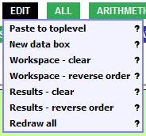

EDIT menu

|
Tools related to modifying the workspace and results areas
- Paste to toplevel: Pastes whatever is in the BioBIKE clipboard to the workspace
(see Copying)
- New data box: Opens an empty box. This may be useful for monitoring the value of a variable as it changes.
- Workspace - clear: Removes all boxes from the workspace. Good for getting rid of the clutter.
- Workspace - reverse order: Reverses the order of boxes on the workspace. If you prefer most recent and all
subsequent boxes to appear at the top of the workspace, try this out.
- Results - clear: Removes all boxes (except current) from the results. Clicking it again, removes all the results.
- Results - reverse order: By default, the most recent result is on top. Click this to reverse this policy.
- Redraw all: If the display somehow gets mangled, try this out.
|